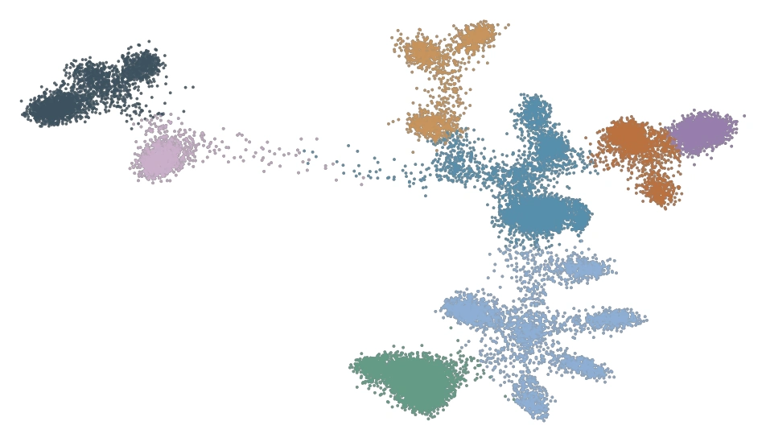
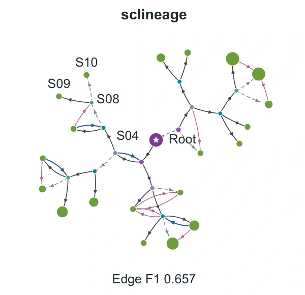

Learn continuous states
Encode continuous states, then freeze the representation.
x → zsclineage learns continuous cell states and organizes them into hierarchical paths. Those paths guide generation at unobserved developmental times.
The key idea: one shared path links state organization, lineage structure and conditional generation.
Explore the results →EXPLORE THE METHOD
Choose a branch and move through time to explore path-conditioned generation.
Conceptual illustration · experimental evidence below.
Encode continuous states, then freeze the representation.
x → zAssign a coarse-to-fine path; shared prefixes guide OT pairing.
s = (c₁, …, cL)Integrate from an observed cell with the full path as a condition.
dy/dt = vθ(y, t, s)CT34 is a synthetic branching benchmark with reference ancestry. Depth measures the resolution of the expression-derived hierarchy.
The 978-clone fate analysis fits expression representations using RNA from all three days and holds out clone groups for fate testing. The separate population-generation experiments exclude the target day from generator and preprocessing fitting.
Reported error bars measure technical training or resampling variation as specified in each source figure. Path-switching experiments measure model controllability. The pancreatic experiment uses a separately trained model.
FIGURE 2 · CONTINUOUS DEVELOPMENT
CT34 tests whether cell states separate naturally while preserving developmental order.
Switch the coloring of 100,000 cells to reveal state identity or developmental progression.

Explore the depth: 80,000 training cells, 20,000 held-out cells.

Held-out NMI peaks at level 4: median 0.816. On the same representation, mean NMI is 0.819 for HTC versus 0.779 for KMeans.
Graph distance tracks developmental time along 20 lineages, independently of HTC depth.
The separate Fig. 2c comparison shows a trade-off: Monocle3 leads the reported state-clustering scores, while sclineage leads correlations with developmental time. Cohort and grouping differences make those rankings descriptive.
FIGURE 3 · DISCRETE STRUCTURE
Test the discrete structure beneath continuous states: routes, directed connections and shared ancestors.
The two reference routes share S04 → S06 → S08. sclineage recovers both complete sequences.

Mean branch-localization F1 across five fits. CellRank 2: 0.428.
Terminal pairs with the exact reference ancestor group in the displayed skeleton. All 13 ancestor groups are retained.
FIGURE 4 · CLONAL VALIDATION
Early RNA predicts barcode-linked descendants. Fit on all three days of RNA; hold out 70% of clone groups for fate testing.
Observed neutrophil descendants.
D2 prediction: 95.6% neutrophil fate.
Observed monocyte descendants.
D2 prediction: 78.0% monocyte fate.
Retrospectively selected examples; cohort-level tests follow.
Native readouts test complete methods. A shared readout compares representations under the same prediction rule.
FIGURE 5 · CONDITIONAL GENERATION
Hold out an entire day. Test path conditioning, source-clone fidelity and population coverage.
Target days are excluded from preprocessing and generator fitting.
Keep network capacity and OT coupling fixed; change only the route input.
Train D2 + D4 → predict D6.
Reported means · Fig. 5c and Supplementary Fig. S12
Shuffle whole fate vectors: population proportions stay fixed, but source correspondence is lost.
375 test clones · TV: sclineage 0.441, scDiffEq 0.452, TIGON 0.511. Correct pairing lowers error 30.78% versus shuffling.
D6 is held out from generator training. A separate D6 readout is fitted using development clones; barcode-linked D6 descendants of the test clones are reserved for evaluation. The animated pairing is schematic.
FIGURE 5e–f · POPULATION FIDELITY
Compare mean expression, full distributions and coverage of observed states.
2,002 genes · displayed seed 42 · Pearson R: D4 0.989, D6 0.980, D2 0.906.
Best mean in 10 of 12 comparisons. scDiffEq leads D6 Pearson R and SWD; explore the trade-off below.
Mean ± sample s.d. · Supplementary Fig. S11. All bar axes begin at zero.
A shared 12-class readout tests composition; three predefined programs test lineage-related expression.
sclineage has the lowest mean composition TV, program-score error and score-distribution Wasserstein distance across the tested tasks.
A displayed composition example from Fig. S8a. Readout estimates are compared on the same scale.
FURTHER EVIDENCE
A matched baseline, a controlled path switch, and a second biological system.
Higher mean Pearson R, precision and recall; lower SWD and MMD, across all three tasks against matched OT-CFM.
The largest recall improvement occurs in D6 forward prediction. Three technical seeds per condition and task.
S15 · SAME SOURCE, NOISE AND TARGET DAY
Fix 530 sources, noise and target day. Full paths reach the requested neutrophil and monocyte branches in 98.74% and 99.55% of predictions. Without path input, switching has no effect.
The switching effect is 99.02 ± 0.14 percentage points across three technical seeds. Expression-only OT also supports strong switching with full path input. This tests model controllability.
A separately fitted model predicts E15.5 from E13.5/E14.5: 78.24% recall, +55.52 percentage points over the stronger baseline, and the lowest mean MMD.
THE RESEARCH
sclineage integrates hierarchical lineage inference with conditional cell-state generation
Reported metrics and manuscript citation. Code and preprint links will follow the public release.